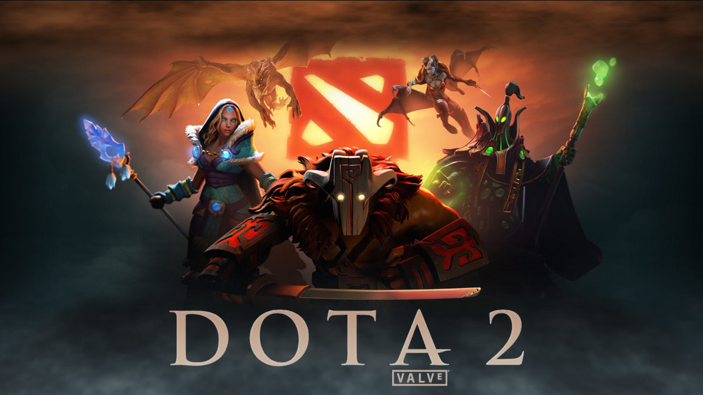

D O T A 2
¿Qué es Dota 2?
Dota 2 es un videojuego perteneciente al género de Arena de batalla en línea ARTS («estrategia de acción en tiempo real»), también conocido como MOBA, lanzado el 9 de julio del año 2013.
El juego fue desarrollado por la empresa Valve Corporation. El título fue anunciado oficialmente el 13 de octubre de 2010, en un artículo en el sitio web Game Informer;1 posteriormente, entró en su etapa Beta a principios del 2011, y finalmente se lanzó al público en general a través de Steam el 9 de julio de 2013 para Microsoft Windows, y el 18 de julio de 2013 para OS X y Linux, el 17 de junio de 2015 Valve lanzó la beta del juego usando el nuevo motor gráfico Source 2 [Dota 2 Reborn], cliente que será el único y definitivo poco después del The International 2015 según el anuncio se mantuvo fiel a su predecesor, a la vez que incrementó la calidad del producto final, además de ofrecer una experiencia envolvente y gratificante para los jugadores.
Sin embargo, Dota 2 es actualmente criticado por tener una dura curva de aprendizaje y una comunidad de las más hostiles en el ámbito de internet. Actualmente es el juego más jugado de Steam con más de 40.6 millones de jugadores2 únicos que se conectan casi en su totalidad con frecuencia diaria3 y ha llegado a ser incluido en el Guinness World Records Gamer's Edition.4Valve Corporation organiza de manera anual el campeonato mundial El Internacional, que en su primera edición fue jugado en la ciudad de Colonia, en Alemania, en el año 2011. La edición de 2015 en el Key Arena (Seattle, Estados Unidos) repartió una cantidad 18.429.613 USD$5 y en la edición de 2016 se repartieron unos $20,770,460 USD$.6 Actualmente el The International es el torneo anual de e-sports que más dinero entrega en premios.7 También otro torneo importante que organiza Valve Corporation son las llamadas Majors,8 las cuales empezaron en noviembre de 2015, siendo tres al año y entregando $3,000,000 USD en premios.9El año 2017 el premio al mejor equipo de Dota 2 fue de $10,862,683 para el equipo ganador.
Mapa

Una partida de Dota 2, cuenta con una fortaleza para cada una de las dos facciones opuestas, Los Dire y Los Radiant , que contienen una estructura principal a la que se le denomina como Ancestro, que son defendidos por varios edificios más pequeños. Ambas bases opuestas están conectadas por tres caminos principales, a los que se suele referir también como líneas o carriles, estos se encuentran vigilados por una sucesión de tres torres defensivas, así como la aparición periódica (cada 30 segundos) de grupos de unidades autónomas llamadas "creeps" que avanzarán por cada carril atacando a todas las unidades o estructuras enemigas con las que entren en rango de visión. Los creeps de cada línea que aparecen cada minuto lo harán más fuertes si un equipo destruye los barracones enemigos situados dentro de la fortaleza respectiva.y cuando destruyen los tres barracones los creeps se convierten en mega creeps Las Torres y creeps sirven para dividir el juego entre ambos equipos; cada uno de los equipos está simbolizado con un color (Radiant como verde, Dire como rojo) además, las primeras son a menudo el punto focal de escaramuzas entre los dos equipos.
El mapa de Dota 2 es, en su función, simétrico, a pesar de tener una serie de diferencias fundamentales que confiere una serie de ventajas y desventajas a cada lado. La base Radiant se encuentra en la esquina suroeste del mapa, mientras que la base Dire esta en la esquina noreste, las dos partes están divididas por un río que divide el mapa diagonalmente por la mitad. Los dos equipos, generalmente integrados por cinco jugadores cada uno, se enfrentan entre sí como los defensores de sus respectivos Ancestros. A través del mapa se pueden encontrar grupos de "creeps neutrales", que no están ligados a ninguna de las dos facciones y se encuentran principalmente en el bosque o "jungla", pero constituyen un recurso para los jugadores.
Situado en el lado noroeste del río se encuentra un neutral creep llamado Roshan que dependiendo de los héroes seleccionados y la etapa del juego puede requerir de un jugador a todo el equipo para matarlo. Después de su muerte, Roshan dejará caer la Protección del Inmortal, objeto que previene la muerte de quien lo recoja, resucitándolo con la totalidad de sus puntos de salud y maná. Si la del protección inmortal no se usa en menos de 5 minutos, esta dejará un aura de regeneración de vida y mana para luego desaparecer del inventario del usuario que la posea. Roshan al morir por segunda vez dejara un queso que restaura instantáneamente 2500 HP y 1000 maná. Al morir por una tercera vez, Roshan dejará además de la protección del Inmortal y el queso, un orbe revigorizante, que al ser utilizado eliminara los tiempos de recarga de las habilidades y objetos.
Heroes
Actualmente, hay 121 "Héroes" en Dota 2. Los héroes son poderosos unidades controladas por el jugador con habilidades especiales y únicas. Aunque muchos héroes tienen roles similares a otros, cada uno otorga diferentes ventajas y limitaciones al equipo. Los héroes comienzan siendo débiles al inicio de la partida, pero irán subiendo de nivel sus habilidades y estadísticas, al ir acumulando experiencia durante el transcurso del juego, pudiendo llegar hasta un máximo de treinta niveles. Los métodos de combate de los héroes están muy influenciados por su característica principal, que puede ser fuerza, agilidad, o inteligencia. La mayoría de los modos de juego ofrecen equipos con un tiempo de preparación antes de que comience el juego, para que así se pueda decidir la selección de héroes, ya que la composición del equipo puede afectar significativamente su rendimiento durante toda la partida. Debido a que Dota 2 es altamente orientado al juego en equipo, los jugadores deben coordinar y planificar sus acciones con sus compañeros con el fin de lograr la victoria. Los jugadores tienen 9 ranuras de inventario solo 6 se pueden usar, se llenan por la compra de artículos a cambio de oro, la moneda principal del juego. Estos artículos varían drásticamente en su función: algunos simplemente mejoran las estadísticas de un héroe, mientras que otros les otorgan habilidades que se pueden activar o pasivas adicionales. Su precio varía en relación con su beneficio. Aunque el oro se concede constantemente (a un ritmo lento), los artículo más caros normalmente solo son comprados por los héroes con una tasa de acumulación de oro bastante alta, lo que por lo general se consigue al matar eficientemente a los creeps, héroes o estructuras enemigas. Matar personajes no-jugadores otorga oro únicamente al aquel jugador que dio el golpe final, mientras que matar héroes otorga oro al asesino y a cualquier aliado cercano, y la destrucción de torres o matar a Roshan da oro a todos los jugadores del equipo más una recompensa adicional a aquel que le haya dado el último golpe. Además del botín de oro, matar unidades y estructuras será recompensado con experiencia a medida que los jugadores cumplen objetivos, permitiendo a sus héroes subir de nivel. "Denegar" es una característica del juego que permite a los jugadores la capacidad de reducir la acumulación de oro al matar a una unidad aliada o destruir una estructura aliada antes de que el enemigo la destruya
Modos
Actualización: Esta actualización abarca muchísimos aspectos del juego nuevo motor de gráficos mejor jugabilidad además modifican el mapa añadiendo 2 fuentes a los lados de la tienda secreta esto es una gran ayuda cuando comienzan TEAM-FIGHT además puedes teletransportarte a estas fuentes, esta actualización añade un árbol de talentos a cada personaje para beneficio de este, esta actualización debería tomarse como una expansión del juego, proximante se podrían lanzar nuevos personajes e incluso añadir nuevos mapas. Además de un nuevo modo de juego “Modo Turbo”. Hay 12 modos de juego : Cabe destacar que la partida también puede terminar si todos los héroes de un equipo abandonan la partida y gana el equipo que no abandono.
- Modo Turbo: Es como el modo de elección libre solo que recibes más oro y experiencia eso hace tu partida más rápida y es el mismo concepto debes destruir su torre central (Ancient).
- Elección Libre: Cada jugador puede elegir cualquier héroe disponible.El juego finaliza cuando se destruye la torre central (Ancient).
- Todos Aleatorio: Cada jugador recibirá un héroe al azar.El juego finaliza cuando se destruye la torre central (Ancient).
- Selección Simple: Cada jugador elegirá a uno de los tres héroes seleccionados al azar para él.El juego finaliza cuando se destruye la torre central (Ancient).
- Selección Aleatoria: A cada jugador se le asignara un héroe escogido de al azar para el, que podrá intercambiar con algún aliado si este esta de acuerdo.El juego finaliza cuando se destruye la torre central (Ancient).
- Modo Capitán: A cada equipo se les asigna a un capitán para que elija los héroes para su equipo. Los capitanes también prohíben héroes entre los disponibles.El juego finaliza cuando se destruye la torre central (Ancient).
- Selección con Capitán: A cada equipo se les asigna a un capitán para que elija los héroes para su equipo entre un grupo limitado.El juego finaliza cuando se destruye la torre central (Ancient)
- Menos Jugados: Los jugadores solo pueden elegir entre sus héroes menos usados. Este modo es ideal para aprender héroes nuevos ya que todos estarán en igualdad de condiciones.El juego finaliza cuando se destruye la torre central (Ancient)
- Selección de Habilidades: Crea un héroe único seleccionado entre un conjunto de habilidades.El juego finaliza cuando se destruye la torre central (Ancient)
- 1 vs 1 Mid: Modo enfrentamiento de un jugador en la senda central. Gana quien elimine al enemigo dos veces o destruya la torre central primero. No se puede ver el héroe escogido por el enemigo y pueden haber héroes duplicados.Generalmente se recomienda usar héroes que tienen habilidades para bajarle la vida al héroe enemigo en poco tiempo (ZEUS, OGRE, ETC ) o héroes que tengan facilidad para romper torres (sniper, drow ranger, etc)
- Todos aleatorio a muerte: Cada jugador recibe un héroe el cual será sustituido por otro de forma aleatoria al morir, cada equipo tiene solo 40 vidas. El juego finaliza cuando se destruye la torre central(Ancient) contraria o los 5 jugadores pierden sus 40 héroes disponibles